📑 Tabla de Contenidos
1. Introducción
NexaMed es un sistema de gestión clínica diseñado para facilitar el manejo de pacientes, consultas, citas y órdenes médicas en consultorios y clínicas médicas.
URL:
https://nexamed.up.railway.appCredenciales proporcionadas por el administrador
2. Primer Inicio de Sesión
2.1 Pantalla de Login
Pantalla de inicio de sesión de NexaMed
- Ingrese su correo electrónico en el campo "Email"
- Ingrese su contraseña en el campo "Contraseña"
- Haga clic en el botón "Iniciar Sesión"
3. Dashboard Principal
3.1 Vista General
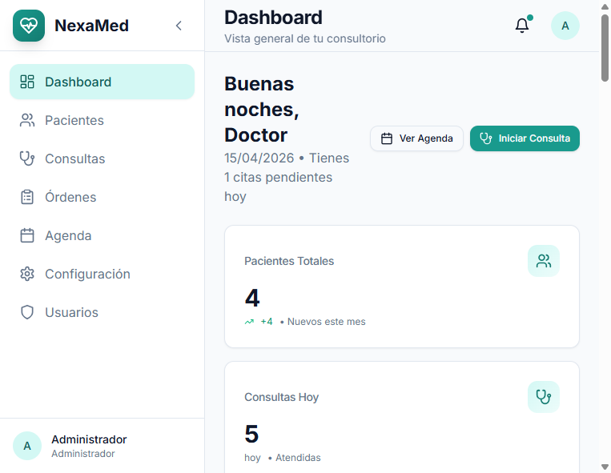
Dashboard principal con resumen de actividad
El Dashboard muestra un resumen de la actividad del consultorio:
- Pacientes Totales: Número total de pacientes registrados
- Consultas Hoy: Consultas programadas para el día actual
- Citas Pendientes: Citas que requieren confirmación
- Órdenes Activas: Órdenes médicas pendientes
4. Gestión de Pacientes
4.1 Lista de Pacientes
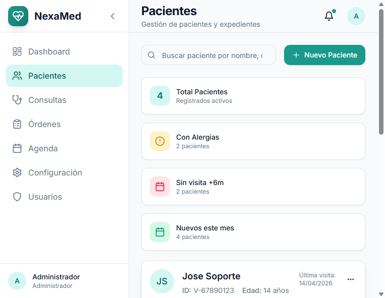
Vista de lista de pacientes registrados
Funciones disponibles:
- Buscar: Use el campo de búsqueda para encontrar pacientes por nombre o cédula
- Nuevo Paciente: Botón verde para registrar un nuevo paciente
- Ver/Editar/Eliminar: Acciones disponibles por cada paciente
4.2 Crear Nuevo Paciente
El formulario de creación está organizado en pestañas:
Pestaña 1: Información Personal
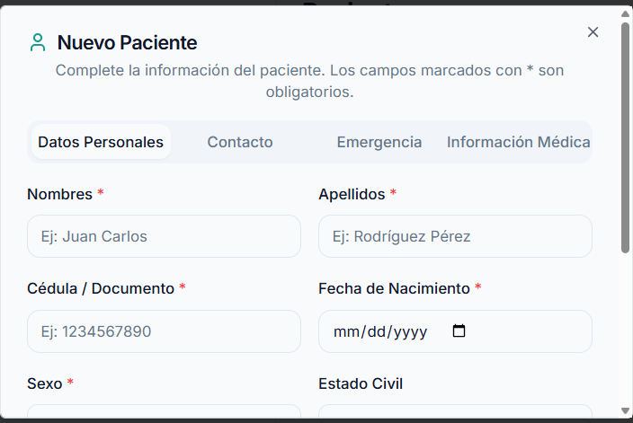
Formulario - Información personal del paciente
Campos obligatorios:
- Nombres y Apellidos
- Cédula de Identidad
- Fecha de Nacimiento
- Sexo
Pestaña 2: Contacto
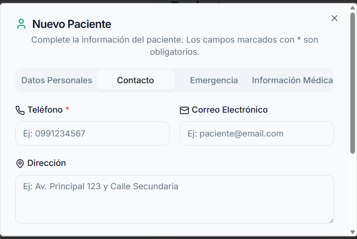
Formulario - Datos de contacto
Pestaña 3: Información Médica
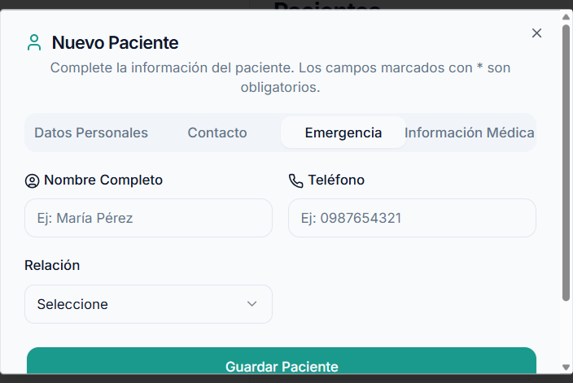
Formulario - Información médica del paciente
Pestaña 4: Contacto de Emergencia
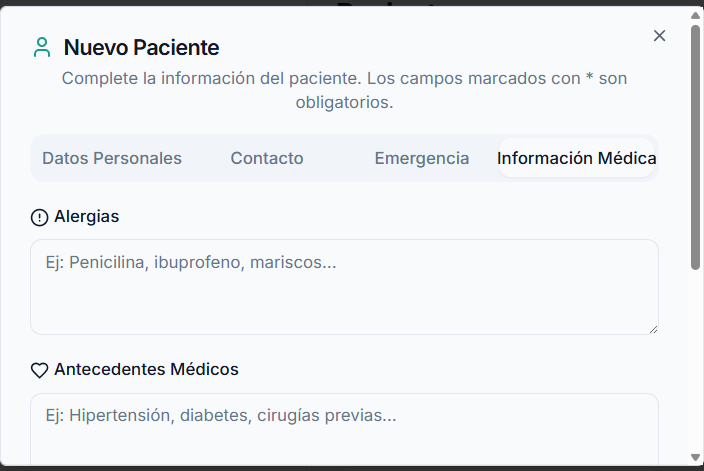
Formulario - Contacto de emergencia
4.3 Ver Detalles del Paciente
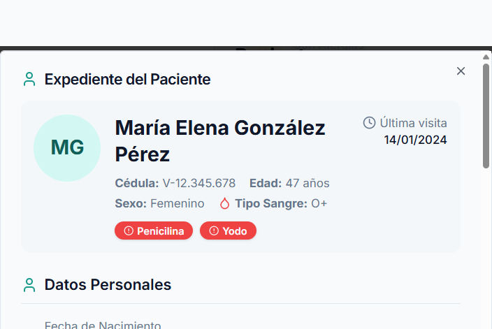
Vista detallada de información del paciente
4.4 Editar Paciente
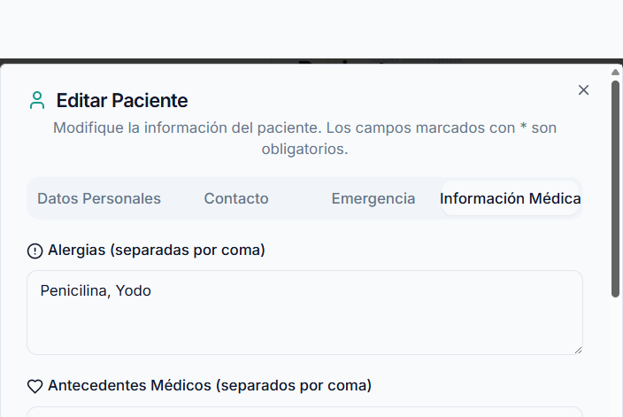
Modal de edición de paciente
4.5 Eliminar Paciente
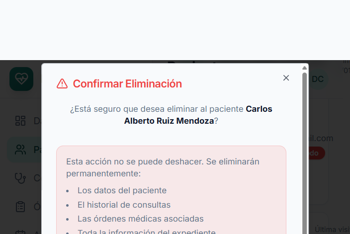
Confirmación para eliminar paciente
5. Expediente Clínico
5.1 Vista del Expediente
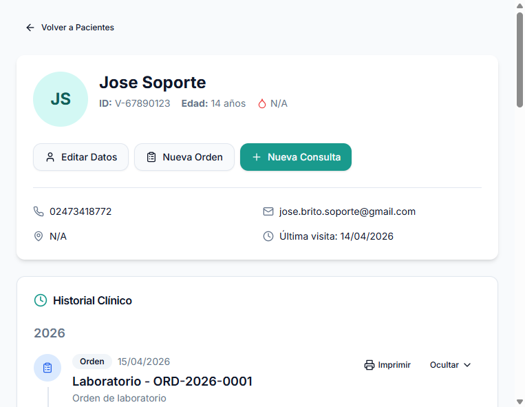
Vista del expediente clínico completo
El expediente muestra:
- Información del paciente (parte superior)
- Timeline de consultas (centro)
- Órdenes médicas asociadas
- Botones de acción para nueva consulta u orden
Acciones disponibles:
- Nueva Consulta: Inicia una nueva consulta médica
- Nueva Orden: Crea orden de laboratorio, imagenología o interconsulta
6. Consultas Médicas
6.1 Nueva Consulta (Formato SOAP)
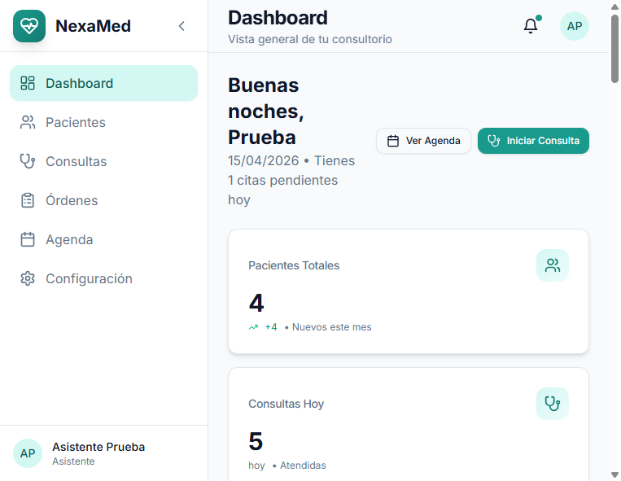
Formulario de consulta médica formato SOAP
Estructura SOAP:
| Sección | Descripción |
|---|---|
| S - Subjetivo | Síntomas que describe el paciente |
| O - Objetivo | Hallazgos del examen físico |
| A - Análisis | Diagnóstico presuntivo |
| P - Plan | Tratamiento y recomendaciones |
6.2 Imprimir Consulta
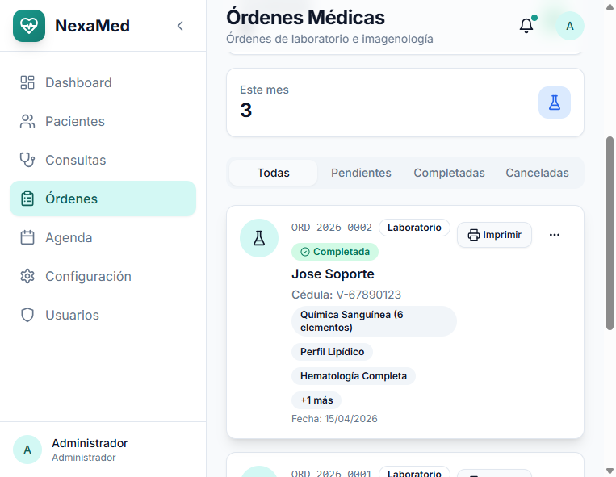
Vista previa de impresión de consulta
Haga clic en "Imprimir" para generar el informe médico en formato PDF.
7. Órdenes Médicas
El sistema permite crear tres tipos de órdenes:
- Laboratorio: Exámenes de sangre, orina, etc.
- Imagenología: Rayos X, ultrasonido, tomografías
- Interconsulta: Derivación a otras especialidades
7.1 Crear Orden de Laboratorio
Formulario de creación de orden médica
- Seleccione el tipo de orden (Laboratorio)
- Ingrese el diagnóstico presuntivo
- Seleccione la prioridad (Normal/Urgente)
- Busque y agregue los exámenes solicitados
- Agregue observaciones si es necesario
- Haga clic en "Guardar Orden"
8. Agenda y Citas
8.1 Vista del Calendario
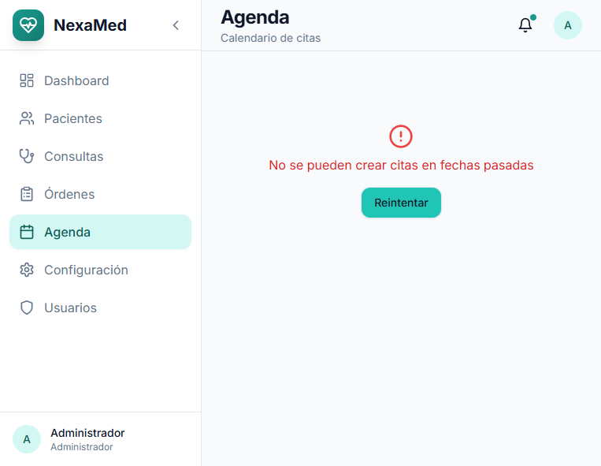
Vista del calendario de citas
Vistas disponibles:
- Vista mensual
- Vista semanal
- Vista diaria
8.2 Crear Nueva Cita
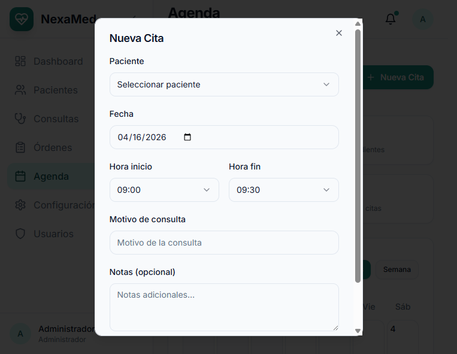
Formulario de nueva cita médica
8.3 Estados de Cita
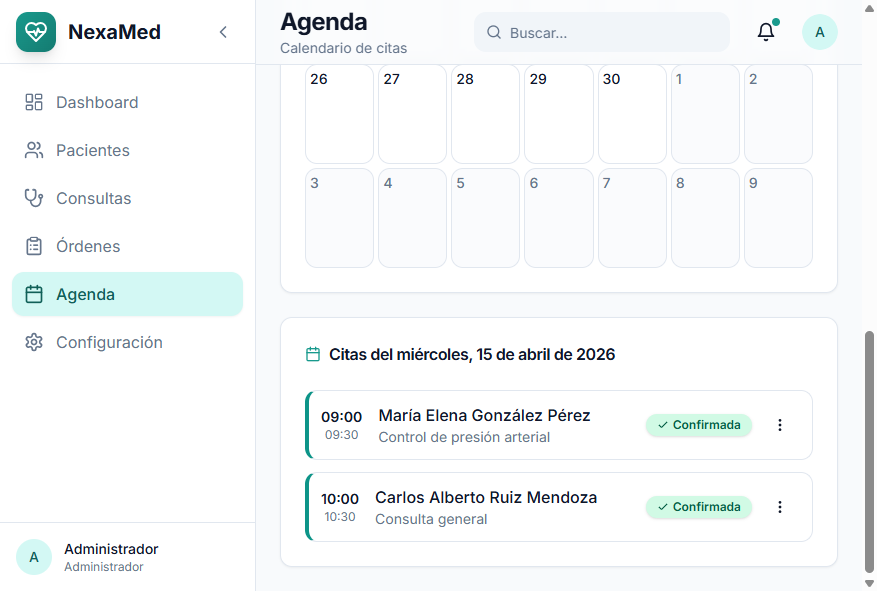
Cambio de estado de cita a confirmada
| Estado | Descripción |
|---|---|
| Pendiente | Cita programada sin confirmar |
| Confirmada | Paciente confirmó asistencia |
| Completada | Consulta realizada |
| Cancelada | Cita cancelada |
9. Configuración
9.1 Perfil del Usuario
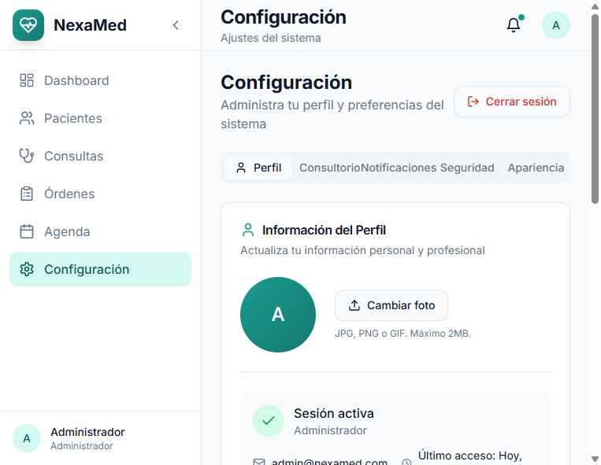
Configuración del perfil de usuario
Datos que puede modificar:
- Nombre completo
- Correo electrónico
- Teléfono
- Especialidad médica
- Número de registro médico
- Biografía profesional
9.2 Información del Consultorio
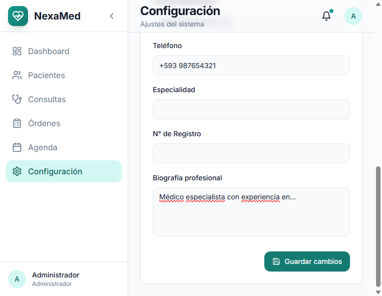
Configuración de datos del consultorio
9.3 Cambiar Contraseña
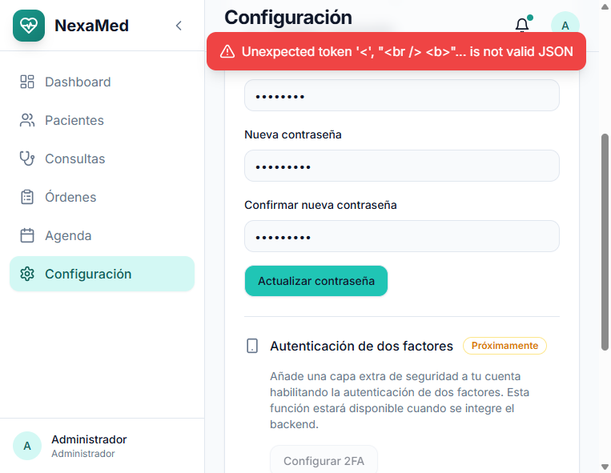
Formulario de cambio de contraseña
Requisitos:
- Contraseña actual
- Nueva contraseña (mínimo 6 caracteres)
- Confirmar nueva contraseña
10. Gestión de Usuarios (Solo Administrador)
10.1 Lista de Usuarios
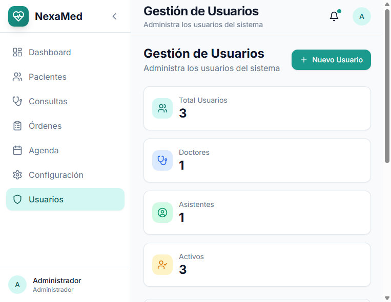
Lista de usuarios del sistema
El administrador puede:
- Crear nuevos usuarios (médicos/asistentes)
- Modificar permisos
- Activar/desactivar cuentas
- Restablecer contraseñas
10.2 Roles del Sistema
| Rol | Permisos |
|---|---|
| Administrador | Acceso total al sistema |
| Doctor | Pacientes, consultas, órdenes, agenda |
| Asistente | Pacientes, agenda (solo lectura en consultas) |
11. Consejos y Buenas Prácticas
11.1 Navegación Rápida
- Use el buscador global para encontrar pacientes rápidamente
- Los accesos directos en el Dashboard llevan a las funciones más usadas
11.2 Gestión de Pacientes
- Mantenga actualizada la información de contacto
- Registre alergias y antecedentes de forma completa
- Use el contacto de emergencia para casos urgentes
11.3 Consultas
- Complete todos los campos SOAP para un mejor seguimiento
- Los signos vitales son obligatorios para estadísticas
- Use el plan de tratamiento detallado para recetas claras
11.4 Órdenes Médicas
- Especifique indicaciones claras para cada examen
- Marque como "Urgente" cuando sea necesario
- Imprima siempre la orden para el paciente
12. Soporte Técnico
📞 Contacto
Email: soporte@nexamed.com
Teléfono: +58 247-1234567
Horario de Atención
Lunes a Viernes: 8:00 AM - 5:00 PM
Resumen de Accesos Rápidos
| Función | Ruta de Acceso |
|---|---|
| Dashboard | Menú principal |
| Pacientes | Menú lateral → Pacientes |
| Nueva Consulta | Expediente del paciente → "Nueva Consulta" |
| Nueva Orden | Expediente del paciente → "Nueva Orden" |
| Agenda | Menú lateral → Agenda |
| Configuración | Menú lateral → Configuración |